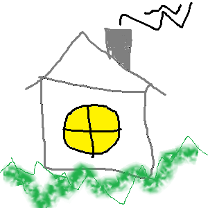

Lehel on kasutatud map area käsud
palun kliki hiirega pildi erineva alale

Aken on hoone, sõiduki või muu objekti seinas, katuses või ukses paiknev ava, mis tavaliselt võimaldab lasta sisse valgust ja õhku.
Tänapäeval on aknad tavaliselt klaasitud või kaetud mõne muu läbipaistva materjaliga.[1] Ka lükandosad ja raam viitavad aknale.[2] Paljusid hoonete või sõidukite klaasitud aknaid saab avada, et ruumi ventileerida või sulgeda, et vältida väliseid ilmaolusid. Enamasti on akendel riiv või muu mehhanism, mille abil saab aknaid sulgeda või avada. Sedamööda, kuidas hoonetes on levinud sundventilatsioon, mis võimaldab õhuvahetust akent avamata, on hakatud ehitama ka mitteavanevaid aknaid.